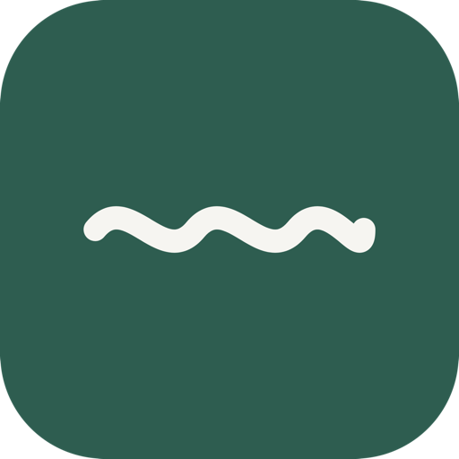

Hudson
A fast, private email client for your Mac. As quick as Superhuman — but everything stays on your machine.
Download for MacFree forever · macOS 15 or later · Apple Silicon & Intel
Open source
No account, no server
Bring your own AI key
Blazing fast
Keyboard-first, instant search, and a reading pane that opens the moment you land on it. Built native in Swift.
Private by design
Your mail lives in a local database on your Mac. No Hudson server ever sees it. No ambient AI reading your inbox.
AI on your terms
Summarize, draft in your voice, and ask — powered by your own Anthropic key or a local model. On only when you turn it on.